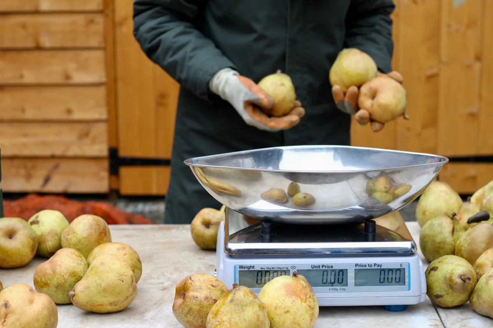
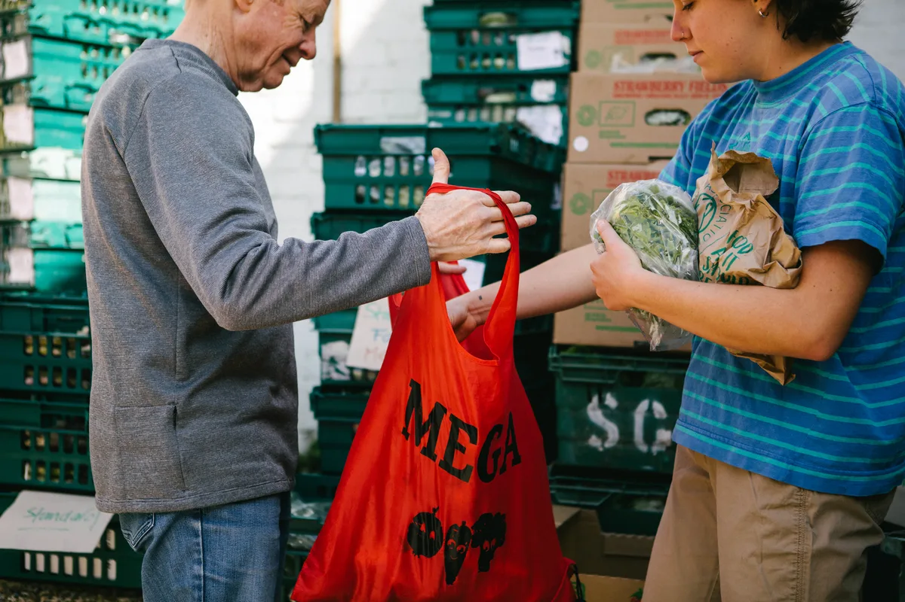
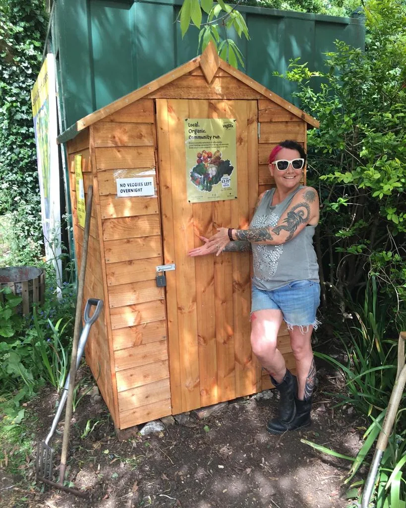
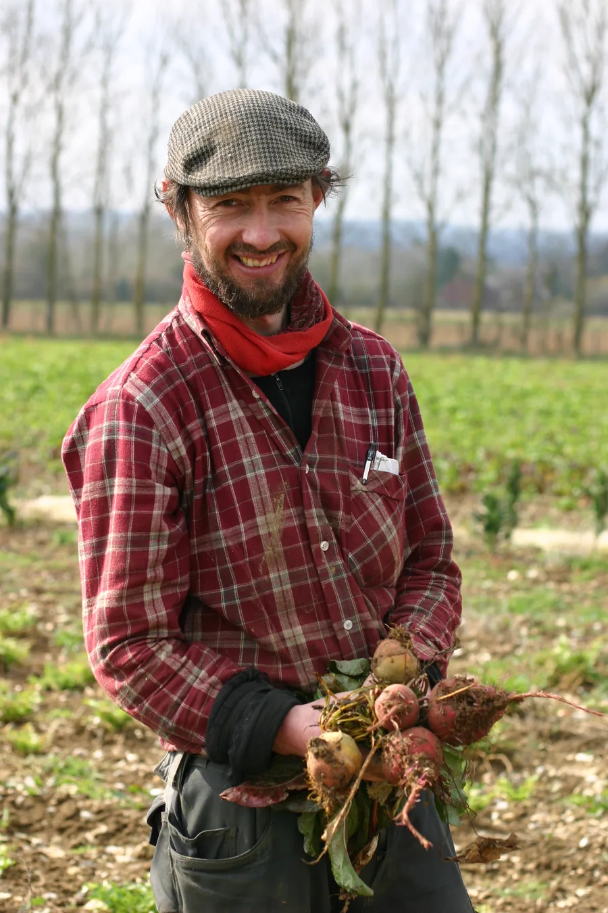
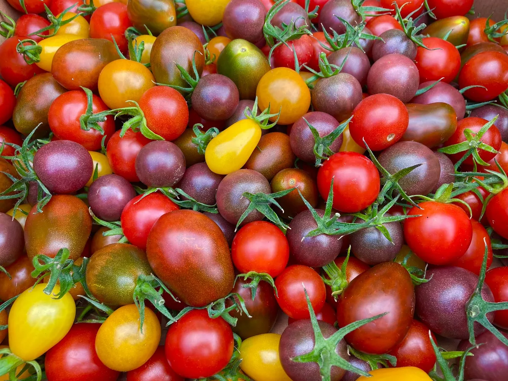

Simple as 1, 2, 3
How it works
Join as a member, and every Wednesday a bag of freshly harvested UK fruit and veg arrives at a collection point near you. Here's the whole journey, from field to kitchen.
Pick your bag
Become a member and choose from four bag sizes, with or without a weekly fruit supplement added to your bag. Membership is open to everyone. See the bags and prices.
Fresh from the farm
Our farmers harvest early in the week and deliver to our packing yard at The Thanet Community Centre, where the team packs everything into reusable bags on Wednesday morning.
From a point near you
We text you when your bag reaches your local collection point on Wednesday. Collect it by Friday, and return your reusable bag from the week before.


Paying for your bag
Payment is by weekly Direct Debit through GoCardless, a secure online payment system – you set the mandate up once when you sign up, and that's it. The payment goes out on Monday, ahead of the Wednesday when you collect your bag.
If money is tight
Fresh fruit and veg shouldn't be a luxury. We offer a low-income discount on your weekly bag – no questions asked, just tick the box when you sign up – and we accept Healthy Start vouchers. The discounts are paid for by our member-created Solidarity Fund, which anyone can donate to.
Going on holiday?
If you don't need a bag, let us know by 5pm on Tuesday of the week before and we'll pause your payments for the weeks you take off. We need a week's notice because that's when we order from the farms – we order exactly the right amount so nothing is wasted.
Collection points
Bags are delivered on Wednesday to over twenty collection points across Kentish Town, Camden, Islington and beyond. Find your nearest on the map, and pick it when you sign up.
Can't get to a collection point? For an extra £3 we can home-deliver your bag via our partner bike couriers, Neko Home Delivery. And if you're unable to leave home to collect, talk to us – we'll make sure you get your veg.

Our farmers
Everything in your bag is grown as locally as possible, by small-scale sustainable farms in the London hinterland and beyond. They harvest only what's needed each week, which makes Vegbox one of the least wasteful ways to get fresh produce into the city – and because we run a fair supply chain, around 60p of every pound you spend goes to the farmer, compared with roughly 10p in the supermarket system.

Eating with the seasons
Your bag follows the UK growing year, so it changes every week – that's the point. Summer is the golden season; winter brings hardy greens, squashes and roots. And in early spring, roughly April to June, comes a lean period growers call the hungry gap, when there's simply less fresh seasonal produce about – the bag will feel a little lighter then.

Each week's contents are on the homepage, and our newsletter shares what's happening in the fields and what's coming into season – along with recipe ideas for anything unfamiliar.
Ready to start?
Sign up today and your first bag can be ready the following Wednesday.
Sign up now